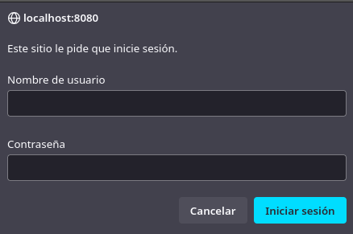
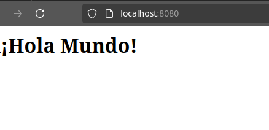
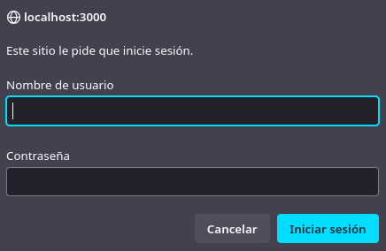
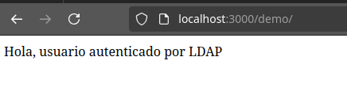

Práctica 6-3. Servidor web con usuarios autenticados mediante servicio de directorio (LDAP)
Para esta práctica, utilizaremos 'docker-compose' para crear una aplicación web con usuarios autenticados mediante LDAP.
En mi caso, crearé toda la estructura de archivos y directorios sobre el directorio "Home" de mi usuario.
Despliegue con Nginx, OpenLDAP y daemon de autenticación LDAP
En primer lugar crearemos los directorios y archivos que compondrán el proyecto. En mi caso, ejecuto:
cd
mkdir -p practica6-3/app
mkdir practica6-3/conf
touch practica6-3/app/index.html
touch practica6-3/conf/ldap_nginx.conf
Con un editor de texto agregamos el contenido de los archivos 'index.html' y 'ldap_nginx.conf'. El contenido de 'index.html' será uno sencillo:
<html>
<body>
<h1>¡Hola Mundo!</h1>
</body>
</html>
El contenido de 'ldap_nginx.conf' será:
server {
listen 8080;
location = / {
auth_request /auth-proxy;
}
location = /auth-proxy {
internal;
proxy_pass http://nginx-ldap:8888;
proxy_set_header X-Ldap-URL "ldap://openldap:1389";
proxy_set_header X-Ldap-BaseDN "dc=example,dc=org";
proxy_set_header X-Ldap-BindDN "cn=admin,dc=example,dc=org";
proxy_set_header X-Ldap-BindPass "adminpassword";
}
}
Y por último crearemos el archivo 'docker-compose.yml' (practica6-3/docker-compose.yml) con el siguiente contenido:
version: '2'
services:
nginx-ldap: #
image: bitnami/nginx-ldap-auth-daemon-archived #
ports: #
- 8888:8888
nginx: #
image: bitnami/nginx
ports:
- 8080:8080
volumes: #
- ./app:/app
- ./conf/ldap_nginx.conf:/opt/bitnami/nginx/conf/server_blocks/ldap_nginx.conf
openldap: #
image: bitnami/openldap
ports:
- '1389:1389'
environment: #
- LDAP_ADMIN_USERNAME=admin
- LDAP_ADMIN_PASSWORD=adminpassword
- LDAP_USERS=customuser
- LDAP_PASSWORDS=custompassword
Y ya sólo queda ejecutar:
docker compose up
Si accedemos al puerto '8080' de la IP de la máquina donde hayamos creado la aplicación a través del navegador, se nos pedirá que nos autentifiquemos:

Una vez introducimos los datos de autenticación, se nos permitirá acceder a la página:

Despliegue con PHP y Apache con LDAP
Para esta segunda parte de la práctica, he borrado todos los archivos y directorios dentro de '~/practica6-3', ya que será este mismo directorio en el que realice el despliegue con PHP y Apache. Antes de eliminar los archivos, he detenido la ejecución de los contenedores creados en el anterior apartado con:
docker compose down
Ahora, con los contenedores detenidos y el directorio limpio, vamos a comenzar creando un 'index.php'. También tendrá un contenido muy simple:
<?php
echo "Hola, usuario autenticado por LDAP";
?>
También crearemos un directorio 'Docker' y, dentro de él, un archivo Dockerfile con el siguiente contenido:
FROM php:7-apache
RUN a2enmod authnz_ldap
COPY Docker/ldap-demo.conf /etc/apache2/conf-enabled/
WORKDIR /var/www/html/demo
COPY Docker/.htaccess ./.htaccess
COPY index.php ./
Dentro del directorio 'Docker' también crearemos un archivo 'ldap-demo.conf', que contendrá una serie de directivas que componen la configuración LDAP. Su contenido será:
PassEnv LDAP_BIND_ON
PassEnv LDAP_PASSWORD
PassEnv LDAP_URL
<AuthnProviderAlias ldap demo>
AuthLDAPBindDN ${LDAP_BIND_ON}
AuthLDAPBindPassword ${LDAP_PASSWORD}
AuthLDAPURL ${LDAP_URL}
</AuthnProviderAlias>
Y un último archivo en 'Docker' con nombre '.htaccess' y contenido:
AuthBasicProvider demo
AuthType Basic
AuthName "Protected Area"
Require valid-user
Ahora construiremos la imagen ejecutando el siguiente comando de Docker:
docker build . \
-t docker-ldap \
-f ./Docker/dockerfile
Por último ejecutaremos un comando 'docker run' utilizando un servicio público de internet para pruebas. El comando a ejecutar completo es:
docker run \
-p 3000:80 \
--name ldap_demo \
-e LDAP_BIND_ON='uid=admin,cn=users,cn=accounts,dc=demo1,dc=freeipa,dc=org' \
-e LDAP_PASSWORD='Secret123' \
-e LDAP_URL='LDAP://ipa.demo1.freeipa.org' \
docker-ldap
Y si accedemos a la IP de la máquina corriendo la imagen en el puerto 3000 y especificando la ruta '/demo', se nos requerirán los datos de autenticación:

Le indicamos los datos de autenticación y podremos acceder a la página:
